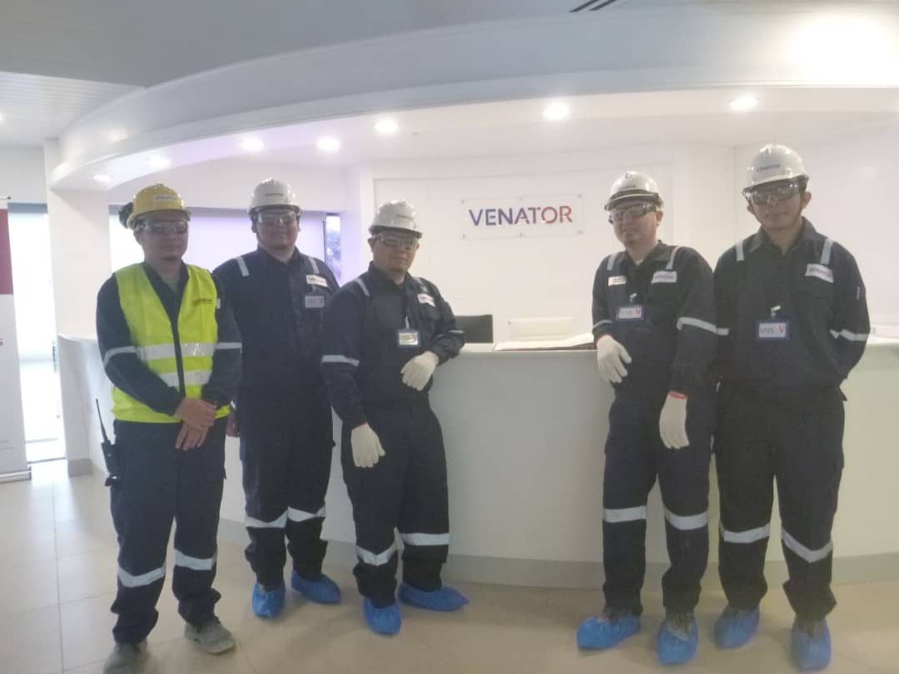

Case stories / 01
Five terminals in one year
In 2025 PETRONAS asked INPRES for CIMAH studies at five of its fuel and LPG terminals in Melaka, Terengganu, Johor, Perak and Sabah. It was the biggest single run of CIMAH work in the group’s history.
- Client
- PETRONAS Dagangan Berhad
- Years
- 2025 to 2027
- Sites
- Kerteh, Terengganu
Pasir Gudang, Johor
Lumut, Perak
Sepanggar Bay, Sabah
Melaka MRC, Melaka - Next
- GES Klang Terminal C3/C4 LPG, 2026
- First CIMAH report
- iSHARP, 2016
Malaysia’s CIMAH Regulations apply to any site holding enough of a hazardous substance to cause a major accident. A fuel and LPG terminal clears that bar easily. The operator has to show, in writing, what could go wrong, how bad it could get, and what stands in the way.
INPRES has written these reports since 2016, when the first went to iSHARP, a Blue Archipelago company handling chlorine. Over the next nine years the list grew to chlorine and chlor-alkali plants in Teluk Kalong, glove factories, semiconductor fabs in Kulim and bulk liquid terminals at Westport.
In 2025 PETRONAS Dagangan Berhad appointed the group for its terminals at Kerteh, Pasir Gudang, Lumut and Sepanggar Bay in Sabah. The Melaka MRC Fuel & LPG Terminal followed under a separate contract. Assoc. Prof. Ir. Dr. Azil Bahari Alias and Prof. Ir. Dr. Zulkifli Abd Rashid lead the work, as they have on almost every CIMAH job since the first.
Each terminal gets its own report. The method is shared, which is why five sites in one year was possible at all. A sixth LPG site, GES Klang Terminal’s C3/C4 facility, was signed in 2026.
N-01The numbers
5 PETRONAS terminals/4 states/RM 0.2M combined/70+ CIMAH entries on UiTM Expert since 2016